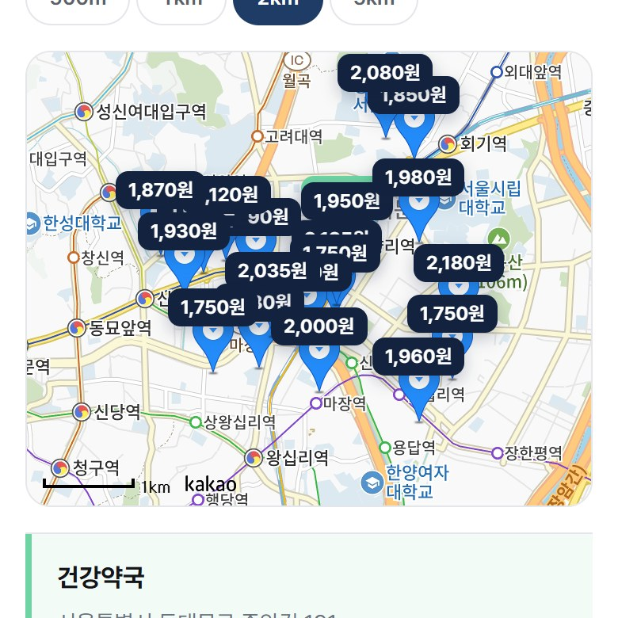

DIRECTION 01
DIRECTION 01온라인 가격 비교 제공 →
여러 약국의 상비약 가격을 한눈에 비교할 수 있는 화면
약 이름으로 근처 최저가 약국을 찾는 서비스
기획 · UI 디자인 · 프론트엔드 · 백엔드 — 1인 개발

일반 의약품은 판매자가격표시제라 같은 제품도 약국의 위치 · 임대료 · 운영비 · 사입 시기에 따라 가격이 달라져요.
그런데 공산품이나 전자제품과 달리 온라인으로 미리 비교할 곳이 없어, 소비자가 직접 발품을 팔아야 해요.
같은 제품이라도 약국마다 벌어지는 가격 편차
온라인으로 가격을 비교 · 통합 조회할 플랫폼이 없음
DIRECTION 01여러 약국의 상비약 가격을 한눈에 비교할 수 있는 화면

DIRECTION 02현재 위치 주변 약국의 위치와 가장 저렴한 약국 추천
 DIRECTION 03
DIRECTION 03사용자가 직접 산 가격을 공유해 최신 가격 편차를 보완
타이레놀 · 소화제 등 상비약을 조금이라도 저렴하게 사고 싶은 일반 소비자
정기적으로 약을 구입해야 해 가격 차이에 민감한 사용자
다른 카테고리처럼 의약품도 가격을 비교하고 구매하려는 사용자
| 기능 | 기능 내용 |
|---|---|
| →약 이름 검색 | 약 이름을 입력하면 관련 약품과 판매 약국을 바로 찾아주는 검색 |
| →근처 약국 최저가 비교 | 현재 위치를 기준으로 근처 약국들의 가격을 지도와 목록으로 한눈에 비교 |
| →인기 상비약 바로가기 | 타이레놀 · 게보린 · 판콜에이 등 자주 찾는 상비약을 칩 한 번으로 검색 |
| →추천 · 가격 · 거리순 정렬 | 가격 · 거리 · 정보의 신선도를 함께 따진 추천순이 기본, 가격순 · 거리순으로 전환 |
| →실사용자 가격 제보 | 직접 산 가격을 제보하면 그 약국 · 약품의 대표 가격에 바로 반영 |
| →관리자 제보 검토 | 이상한 제보를 걸러내고, 가격 격차 · 운영 현황 통계를 한 화면에서 확인 |


결과를 열자마자 얼마나 아낄 수 있는지부터 읽히게 했어요.
같은 약이라 비교 기준은 결국 가격이라, 카드에서 가장 먼저 보이게 했어요.
최저가 · 최단거리 · 오래된 정보를 배지로 달아 순위의 이유가 바로 보여요.
검색 · 카카오맵 · 제보 · 관리자 통계
추천 점수 계산 · JWT 로그인 · 제보 검증
약국 1,040 · 약품 40 · 제보 87,614건
제보 가격은 들쭉날쭉해요.
그래서 대표 가격을 정하는 규칙부터 세웠어요.
최근 90일 제보에서 IQR(1.5배) 밖의 값을 걸러내고 중앙값을 대표 가격으로 써요. 90일 안에 제보가 없으면 180일까지 넓혀 다시 계산해요.
가장 싼 곳만이 아니라 가깝고 최근에 확인된 곳이 위로 오게, 세 가지를 가중합한 추천 점수로 정렬해요. 가중치는 설정 파일로 분리했어요.
제보가 들어오거나 관리자가 처리할 때 그 약국 · 약품의 대표 가격을 바로 다시 계산해 저장(upsert)해요. 검색할 때는 무거운 계산 없이 조인 한 번이면 돼요.
같은 사용자가 같은 약국 · 약품을 같은 날(KST) 두 번 제보하지 못하게 유니크 인덱스를 걸었어요. 날짜 변환을 한국 시간으로 고정해 인덱스에 쓸 수 있게 했어요.
-- 같은 사용자가 같은 (약국, 약품)에 같은 날(KST) 중복 제보하는 것을 차단
-- timestamptz → date 캐스트는 세션 TimeZone에 의존해 STABLE이라 인덱스 표현식에 쓸 수 없다.
-- AT TIME ZONE 'Asia/Seoul'로 timestamp로 고정하면 IMMUTABLE이 된다.
CREATE UNIQUE INDEX uq_report_user_pair_day
ON price_report (user_id, pharmacy_id, drug_id,
((created_at AT TIME ZONE 'Asia/Seoul')::date))
WHERE user_id IS NOT NULL AND status = 'ACTIVE';약값을 비교할 때 불편한 지점을 찾고, 서비스의 목표를 정했어요.
검색 → 결과 → 약국 상세로 이어지는 흐름과 화면 수를 정리했어요.
가격이 가장 먼저 읽히도록 글자 크기와 정렬, 색 규칙을 세웠어요.
프론트엔드와 백엔드 · DB를 직접 연결해 실제로 동작하는 서비스로 만들었어요.
PRD · API · DB 문서를 코드보다 먼저 확정해 구현 중에 설계를 다시 논의하지 않았어요.
이상치에 강한 대표 가격 · 추천 점수 로직을 테스트로 고정했어요.
제보 가격은 들쭉날쭉해서 평균을 내면 순위가 흔들렸어요. IQR로 이상치를 거르고 중앙값을 대표가로 삼았는데, JPA로는 표현이 안 돼 PostgreSQL SQL로 직접 짰어요.
영수증 사진에서 가격을 읽어 오는 OCR 제보와, 관심 약의 가격 변동 알림 · 즐겨찾기를 더하고 싶어요.